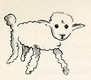

Я прошу снисходительности детей, которые могут прочитать эту книгу, чтобы посвятить ее взрослым. У меня есть серьезная причина: он мой лучший друг на свете. У меня другая причина : этот взрослый понимает все, даже книги о детях. У меня есть третья причина: он живет во Франции, где ему холодно и голодно. Ему нужно взбодриться. Если всех этих причин недостаточно, я посвящу книгу ребенку, из которого вырос этот взрослый. Все взрослые когда-то были детьми - хотя мало кто из них помнит об этом. И вот я исправляю свое посвящение:
I
Однажды, когда мне было шесть лет, я увидел в книге под названием « Реальные истории природы Реальные истории природы » великолепную картину о первозданном лесу. Это было изображение удава, проглатывающего животное. Вот копия рисунка.

В книге сказано: « Удавы глотают свою добычу целиком, не пережевывая ее. После этого они не могут двигаться и спят в течение шести месяцев, необходимых для пищеварения> ».
Тогда я глубоко задумался над приключениями в джунглях. И, немного поработав цветным карандашом, мне удалось сделать
свой первый рисунок. Мой рисунок номер один. Выглядело это примерно так:

Я показал свой шедевр взрослым и спросил, пугает ли их рисунок.
Но они ответили: « Пугать? Чего должна пугать шляпа? »
Мой рисунок не был изображением шляпы. Это было изображение удава, переваривающего слона. Но поскольку взрослые этого не понимали, я сделал другой рисунок: я нарисовал внутреннюю часть удава, чтобы взрослые могли его ясно увидеть. Им всегда нужно что-то объяснять. Мой рисунок номер два выглядел так:

На этот раз взрослые посоветовали мне отложить рисунки удавов, как изнутри, так и снаружи, и вместо этого посвятить себя географии, истории, арифметике и грамматике. Вот почему в возрасте шести лет я отказался от великолепной карьеры художника. Я был разочарован неудачей моих рисунков номер один и моих рисунков номер два. Взрослые никогда ничего не понимают сами по себе, и детям утомительно постоянно им что-то объяснять.
Тогда я выбрал другую профессию и научился пилотировать самолеты. Я немного пролетел над всеми частями мира; и правда, что география мне очень пригодилась. С первого взгляда я могу отличить Китай от Аризоны. Если кто-то заблудился в ночи, такие знания очень ценны.
В течение этой жизни у меня было очень много встреч с очень многими людьми, которые были озабочены важными вопросами. Я много жил среди взрослых. Я видел их близко, близко. И это не сильно улучшило мое мнение о них.
Всякий раз, когда я встречал кого-нибудь из них, который казался мне достаточно дальновидным, я пробовал в эксперименте показывать ему свой рисунок номер один, который я всегда хранил. Я бы попытался выяснить, был ли это человек истинного понимания. Но кто бы это ни был, он или она всегда говорили:
« Это шляпа ».
Тогда я бы никогда не стал говорить с этим человеком о удавах, о первобытных лесах или звездах. Я бы опустился до его уровня. Я бы поговорил с ним о бриджах, гольфе, политике и галстуках. И взрослому было бы очень приятно встретить такого разумного человека.
II
Так что я прожил свою жизнь один, без никого, с кем действительно мог бы поговорить, пока шесть лет назад я не попал в аварию с моим самолетом в пустыне Сахара. Что-то сломалось в моем двигателе. И так как со мной не было ни механика, ни пассажиров, я принялся за трудный ремонт в одиночку. Для меня это был вопрос жизни или смерти: у меня едва хватало питьевой воды на неделю.
Итак, первую ночь я заснул на песке за тысячу миль от любого человеческого жилья. Я был более изолирован, чем моряк, потерпевший кораблекрушение на плоту посреди океана. Таким образом, вы можете представить мое изумление на восходе солнца, когда меня разбудил странный тихий голос. Он сказал:
" Пожалуйста - нарисуйте мне барашка! "
" Какие! "
" Нарисуй мне овцу! "
Я вскочил на ноги, совершенно пораженный. Я сильно моргнул. Я внимательно осмотрелся вокруг. И я увидел необычайно маленького человека, который стоял там и внимательно разглядывал меня. Здесь вы можете увидеть лучший портрет, который мне впоследствии удалось сделать. Но мой рисунок, безусловно, гораздо менее очарователен, чем его модель.

Однако это не моя вина. Когда мне было шесть лет, взрослые отговорили меня от карьеры художника, и я так и не научился ничего рисовать, кроме удавов снаружи и удавов изнутри.
Теперь я смотрел на это внезапное привидение, и мои глаза в изумлении вылетали из головы. Помните, я разбился в пустыне за тысячу миль от любого населенного пункта. И все же мой человечек, казалось, не блуждал в нерешительности среди песков, не падал в обморок от усталости, голода, жажды или страха. Ничто в нем не намекало на ребенка, потерянного посреди пустыни, за тысячу миль от любого человеческого жилья. Когда я наконец смог заговорить, я сказал ему:
" Но - что ты здесь делаешь ?"
И в ответ он повторил, очень медленно, как будто говорил о важном деле:
« Извольте - нарисуйте мне барашка ... »
Когда тайна слишком велика, нельзя ослушаться. Как ни абсурдно это могло показаться мне, за тысячу миль от любого человеческого жилья и в смертельной опасности я вынул из кармана лист бумаги и перьевая ручка. Но потом я вспомнил, как мои исследования были сконцентрированы на географии, истории, арифметике и грамматике, и сказал маленькому парню (тоже немного сердито), что я не умею рисовать. Он мне ответил:
« Это не имеет значения. Нарисуй мне овцу ... »
Но я никогда не рисовал овец. Поэтому я нарисовал для него одну из двух картин, которые так часто рисовал. Снаружи это был удав. И я был изумлен, услышав, как малыш приветствует его:
« Нет, нет, нет! Мне не нужен слон внутри удава. Удав - очень опасное существо, а слон очень громоздкий. Там, где я живу, все очень маленькое. Мне нужна овца. Нарисуй мне овцу ".
Тогда я сделал рисунок.
Он внимательно посмотрел на нее и сказал:
« Нет. Эта овца уже очень больна. Сделайте мне другую ».
Итак , я сделал еще один рисунок.

Мой друг нежно и снисходительно улыбнулся.
«Вы сами видите, - сказал он, - что это не овца. Это баран. У него есть рога» .
Итак, я снова нарисовал свой рисунок.
Но и он был отвергнут, как и другие.
«Этот слишком старый. Я хочу овцу, которая проживет долго » .

К этому времени мое терпение было исчерпано, потому что я очень торопился начать разбирать свой двигатель. Я выбросил этот рисунок.

И я выбросил объяснение с этим.
«Это только его ящик. Овца, которую ты просил, внутри» .
Я был очень удивлен, увидев на лице моего молодого судью блеск:
«Это именно то, чего я хотел! Как вы думаете, этой овце нужно будет много травы?»
" Почему? "
«Потому что там, где я живу, все очень мало ...»
«Травы ему наверняка хватит», - сказал я. «Я дал вам очень маленькую овечку» .
Он склонил голову над рисунком.
«Не такой уж маленький, что ... Смотри! Он заснул ...»
Так я познакомился с Маленьким принцем.